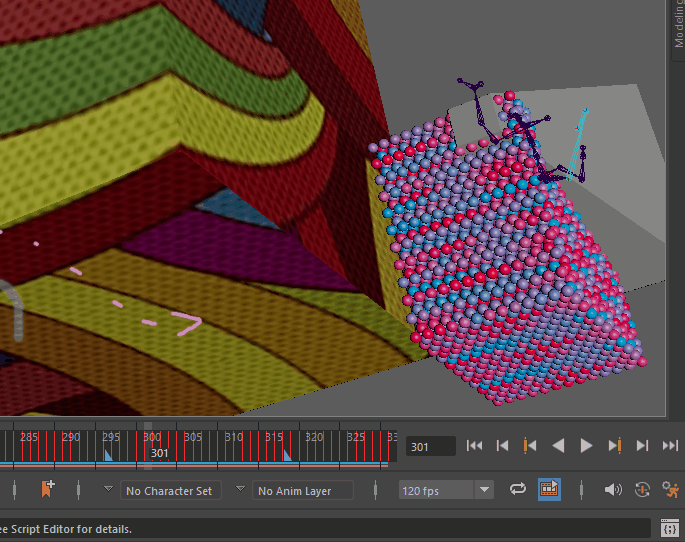

可以自定义时间滑块关键帧标记的外观，也可以访问时间滑块首选项(Time Slider Preferences)窗口中“播放速度”(Playback Speed)和“循环”(Looping)等对应的控件。

“时间滑块首选项”(Time Slider Preferences)按钮位于用户界面的右下角。
编辑关键帧首选项
- 单击“动画控件”(Animation controls)中的“动画首选项”(Animation Preferences)按钮 。
此时将打开“首选项”(Preferences)窗口，并显示时间滑块(Time Slider)类别。
请参见
- 在“时间滑块”(Time Slider)区域，您可以编辑关键帧标记首选项。
- （可选）在“类别”(Categories)框中，选择“动画”(Animation)以查看并编辑其他动画首选项。
- 单击“保存”(Save)为您的场景保存当前的关键帧首选项，或者单击“取消”(Cancel)放弃所做的任何更改。
另请参见“通道控制”(Channel Control)编辑器。